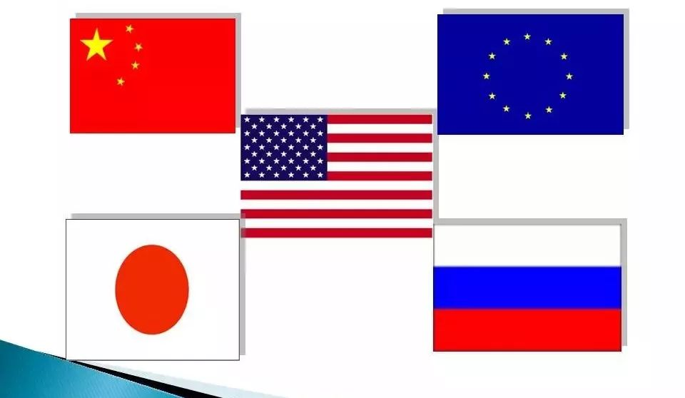
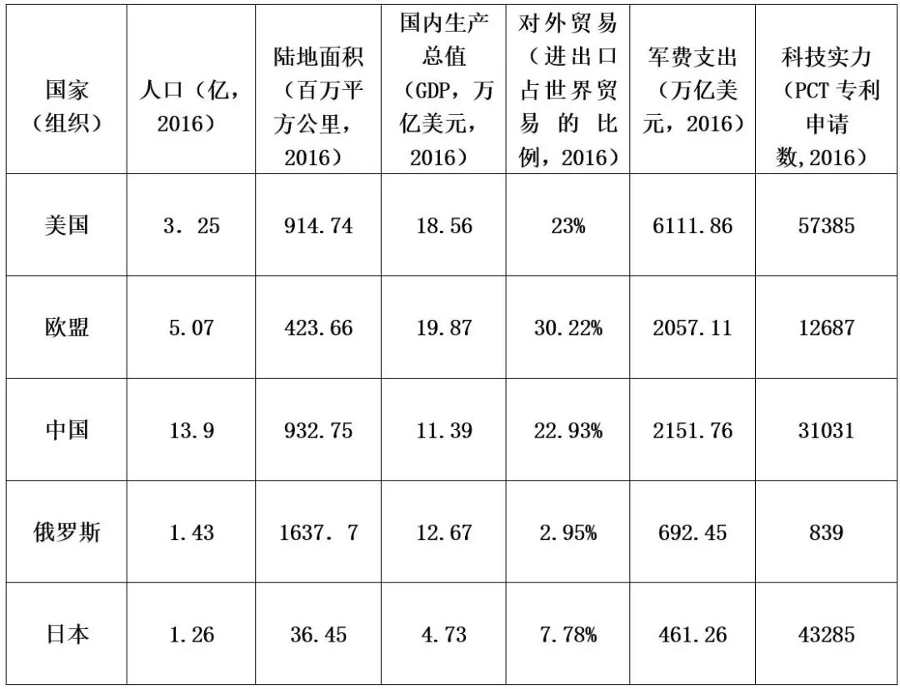
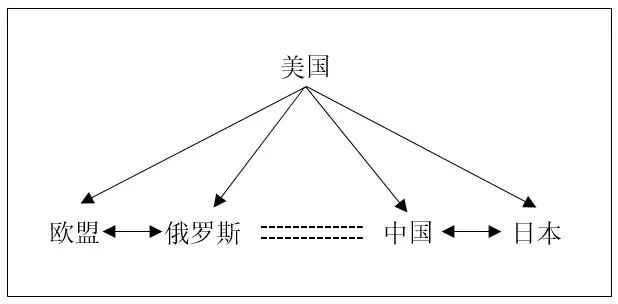

收录于合集
简
叶晓迪
台湾大学政治学研究所博士生
**** 摘要： 单极衰弱现象不仅预示国际格局中的权力再分配，更促使美国不得不调整其外交战略布局。作为体系内能动性最高的霸权国，如何在单极衰弱期减缓自身的衰弱速度，维持霸权地位，成为美国所要面对的首要战略问题。在批判性地回顾现有关于国际格局转变的文献的基础之上，本文提出“一霸四强论”的观点，作为“一超多强”概念的理论补充，用以诠释霸权国美国在单极衰弱的过程中如何通过“战略筑底”的方式构筑战略基底，维持其霸主地位。同时，本文还认为，作为结构性压力的主要承压者，中国需要能够辨析美国的筑底战略，厘清该战略对中国所产生的结构性压力，才能做出相应的外交战略选择。
关键词： 单极衰弱;战略筑底;中美关系;中国外交
美国在后冷战时代所主导的单极格局虽已存在逾二十年之久，但政学两界对这个新的国际格局仍未达成一种共识，进而衍生出各种不同“极”的观点，如“单极论”、“两极论”、“多极论”与“无极论”等。[1]这种争论在2008年全球经济危机后出现的美国秩序衰弱论中进一步升温。[2]全球性的经济衰退导致国际体系中权力格局出现调整，使得传统大国对国际格局的影响力降低，新兴国家快速崛起与传统强权间的互动模式成为推动国际体系转变的另一大动力源，增大当代国际格局变动的显著性，因而也使国际格局进入转型的加速期。
上述现象的出现产生若干国际政治中的重要问题，即：何种“极”的观点能够更准确描述国际格局的转变？美国作为既存的霸权国将采取何种主动战略以应对国际格局的转变？中国作为霸权国下的首强将如何应对“国际格局转型”与“既存霸权国战略转变”所产生的双重结构性压力？ 本文认为，现有的“极论”虽为探讨格局转变趋势提供多面向的视角，但这些文献分类往往过于概念化与抽象化。有鉴于此，本文提出“一霸四强”理论，用以诠释在既存霸权国美国如何通过“战略筑底”使其他次级强国相互制衡以减缓自身衰弱的进程。 同时，本文还试图解释美国的筑底战略对中国外交战略的影响，并透析中国在此结构性压力下应采取何种战略选择。
文章的后续主要由四部分组成：第一部分先对现有的文献进行批判性回顾，进而探讨其中可能存在的不足。第二部分则提出本文的核心分析框架“一霸四强论”，辅之以两个实证案例解释美国是如何在单极衰弱期进行战略筑底。在第二部分的基础上，第三部分重点讨论美国的战略筑底所产生的结构性压力对中国外交战略的挑战。结论则是总结前文的研究与发现。（本文经国政学人微信公众平台编辑首发）
一、现有文献对国际格局转变趋势的讨论
冷战结束后，国际格局转变的趋势就成为国际关系领域中争论不休的议题，各类研究文献层出不穷。为了使得研究显得更具系统性，学者将相关的作品作出分类， 大抵可分为四个派别，亦即：多元格局派、普遍不结盟派、二元格局派以及一元格局派。 其中，除了普遍不结盟派逐渐消闻以外，其余三派的理论观点出现强化的趋势。现有关于国际格局转变的文献大抵都被囊括在“多元格局”、“二元格局”以及“一元格局”三派中。[1]因此，本文认为有必要对相关的文献进行梳理与补充最新的发展，并进行文献的交叉比对，以便透析既存研究是否存在不足。
（一）单极论：持续或衰弱？
单极论认为后冷战时代的国际格局是由美国主导的单极格局，没有任何一个国家或集团足以挑战美国的霸权地位。然而，关于单极格局的未来，单极论中出现不同的观点， 本文将其划分为单极稳定派与单极衰弱派。
先论单极稳定派。 威廉·沃尔弗斯（William C. Wohlforth）认为当前的国际格局无疑是单极的，因为无论是从经济、军事、科技或还是地缘政治的角度来看，任何其他国家都无法与美国匹敌。并且，这种单极所具有“和平性”与“持久性”构成“单极稳定论”的两大核心要素.此外，不同学者还为美国如何维持单极稳定提供不同的战略建议。例如，约瑟夫·奈（Joseph S. Nye）从软实力的角度提出，美国若想继续维持单极体系的稳定与和平，就必须采取“软硬兼施”的全球战略，特别注重软实力主导与硬实力相结合在国际政治中的影响力。布热津斯基（Zbigniew K. Brzezinski）则是从硬实力的角度为美国提供战略建议：美国应该为欧亚大陆制定和实施一套完整、全面和长期的地缘战略，因为美国如何同欧亚大陆那些关键性的地缘政治支轴国家打交道将决定它是否能够稳固地保持在全球的首要地位。
虽然美国在“911事件”后所采取的单边主义行为强化了它在全球范围内的战略优势，使美国的“单极地位”前所未有的凸显，但是随之而来的全球金融危机却使学者相信，尽管现阶段美国的首强地位并不会出现大的改变，但美国所主导的国际秩序却会因其自身的衰弱而显现减弱的迹象。并且，新兴国家的快速发展将逐渐分散美国所联合的主要力量——传统西方发达国家，改变地缘政治格局，可能致使美国的世界秩序变成“孤立的单极”。这类观点逐渐演变为 单极衰弱论 。 而此观点正是均势理论与两极论拥护者对单极论的主要批评，同时也是国际格局将重回两极的理论前提。
（二）重回两极论？
单极衰弱论的兴起反映一种国际政治的现实：单极格局开始出现松动。因此，学界与政界对国际格局转变趋势的讨论则转向重回两极的可能性。重回两极的讨论的理论前提在于：中国最有可能成为自冷战结束以来国际格局中的第二个超级大国。 在此种态势下，中国很有可能先追赶上美国，构成世界中的“中美两极”，进而取代美国成为新的霸权国家，构建新型的世界秩序。
在2008年金融危机后，美国彼得森国际经济研究所所长伯格斯滕（C. Fred Bergsten）在《外交事务》撰文正式提出两国集团（G2）的概念，他强调美国政府应该将中国政府视为在全球经济事务中的真诚伙伴，促成两国集团的格局。这种格局的下限在是至少能够减少中美在全球经贸领域的双边摩擦，而上限则是中美合作解决重大的经贸问题。作为经济学家，伯格斯滕的G2概念更多的是从经贸层面切入，基辛格（Henry A.Kissinger）与布热辛斯基的努力则使此概念进一步上升到地缘战略的层面，他们认为：全球化以来的非传统安全问题，包括大规模杀伤武器的扩散、环境问题、气候问题以及恐怖主义活动等对中美两大国合作提出更多的要求，因此，需要有两国集团的机制促使中美两国通力合作才能解决问题。两国集团的概念有别于传统的“两极”的对抗性的冷和平，是中美竞争与合作的新形式。它不仅标志着中美关系已经被视为国际关系中最重要的一组关系，更表示中国崛起的态势之快使其具备成为“第二个超级大国”的潜力。然而，两国集团的构想的可行性似乎有待验证，前国务委员戴秉国在2012年提出希望以C2（两国协调）取代G2概念，用以深化中美间的合作关系便是两国集团运行受阻的表现。
（三）多极论或一超多强论？
单极体系的衰弱与重回两极的运行受阻为除了美中两大国之外的强国参与权力的竞逐创造了空间。因此，“国际社会正朝着多极化的趋势发展”成为许多学者对国际格局转变方向的基本判断。
就西方学者的观点而言，多极论可以由纵切面与横切面来划分。就横切面而言，保罗·肯尼迪（Paul Kennedy）认为未来的国际格局将由美国、苏联、欧洲、日本与中国“五个力量中心”所主导。[8]持有相似观点的还有亨廷顿（Samuel P. Huntington），他提出国际社会间出现新断层的根源在于文明之间的差异所产生的文明的冲突，因此，未来的国际格局将由八个不同的文明中心组成，是之为八极论。就纵切面而言，凯格利（Charles Kegley）与雷蒙德（Gregory Raymond）由上至下地排列，分别从武力、经济与国际互赖三个层面剖析潜在大国对权力空间的竞逐。相似地，布赞（Barry Buzan）与维夫（Ole Waever）以三层阶梯式的界定标准将国际格局内的国家区分为超级大国（美国）、体系层次强国（欧盟、日本、中国和俄罗斯）以及地区层次的大国。总之， 秉持多极论观点的西方学者大都认为，以美国、俄罗斯、欧盟、中国和日本等几大力量为主的多极格局已初步形成。
国内学者对国际格局的现状与发展提出更为准确的研判，即：当今国际格局是“一超多强”，既不是单极，也不是多极，而是处于向多极化国际格局过渡的时期。 美国是唯一的超级大国，中国、俄罗斯、日本、欧盟等综合实力虽然难以与其相提并论，但都是国际格局中的重要力量。过去的20多年间，国内学界出现不少关于“一超多强”格局的论文，主要可分为描述、归纳、拓展与理论化等四个阶段：在描述阶段，周建明在1998年指出一超多强格局的实质是，旧的平衡被打破，新的平衡尚未形成的过渡格局。在归纳阶段，王新波与魏涛总结了一超多强的主要特点：单极与多极化并存、弱化的对抗性以及多元化的对抗领域。在拓展阶段，涂一荣基于现实主义理论，从国家间权力对比的角度切入，将一超多强定义为极其不稳定的非对称性国际多极体系。在理论化阶段，宋泓基于博弈论提出了一套一超多强格局下大国间互动的模式，并为中国与其他大国的互动关系作出战略排序。
（四）小结
在对现有关于国际格局转变趋势的判断的文献进行归类、分派与比对后，本文对上述文献的评述作一小结。 首先，虽然现有的文献大体上穷尽了国际格局转变的可能性，显示其描述性充足，但文献大都是对国际格局状态的定义，这点在对“一超多强”的讨论中表现得尤为明显。 作为过渡期的国际格局，一超多强具有稳定性与动态性兼容的特点，现有文献对其稳定性的特点已有相当的着墨，但对动态性的解释存在不足。 其中，大多数文献忽略了一个重要的视角：从美国的角度而言，作为现有国际格局内能动性最高的霸权国在单极体衰弱期要如何进行“战略筑底”以维持首极地位？ 其次，在解释性方面，现有的文献分类为研究国际格局转变提供不同的解释变量，但如前所述，由于在描述层面忽略“美国的能动性”这一重要问题，使相关研究在解释层面自然地排除既存首极战略筑底这一关键变量。 最后，虽然最新探讨一超多强的文献已开始关注大国间的权力博弈，但依旧忽略“霸权国如何操作大国间互动关系”这一重要的视角。 考虑到美国作为既存霸权国在国际格局中握有主动权的优势，本文认为美国依然能够在单极衰弱期，制定战略筑底的战略设计。（本文经国政学人微信公众平台编辑首发）

二、“一霸四强论”与“战略筑底”的定义
承前所述，单极论、两极论以及多极论对国际格局转变讨论的不足之处在于缺少“动态性”，这部分原因是由理论本身所决定的。不论是单极还是多极，研究对于国际格局转变的判断都是基于“结构论”的视角，这也使此类研判带有“僵化”与“静态化”的特点，在面对动态性的问题时缺乏足够的解释力。 换言之，现有的理论无法很好地回答本文所提出的“作为既存霸权的美国要在单极体系的衰弱期要如何进行战略筑底以维持自身的首极地位？”的问题。 因而，我们需要在体系层次建构一个具有“动态性”的分析框架。 回溯相关文献可发现，无论几极格局，美国、中国、日本、欧盟以及俄国均被列为的体系层次的大国。 换言之，上述五大国应然是国际体系所释出权力空间的主要竞逐者。宋泓博士为界定五大行为体的综合国力提供了良好的指标，包括：人口、陆地面积、国内生产总值、对外贸易、军费支出、科技实力以及工业化进程（作为测量潜在实力的指标）。 本文援引并更新该指标，从数字上的确立的五大行为体在既存国际格局内的大国地位。
表1：五大行为体的综合国力指标

以现有的数据来看，美国仍然是国际格局中的霸主国，仍具有一定的战略优势。例如，在军备支出的指标中，美国的支出费用不仅是中国的三倍，而且其他四大行为体相加总的数额都不及美国。但就长远而言，美国与其他几大行为体（特别是中国与欧盟）之间的比较优势将被缩减。例如，中国的经济规模不断扩大，美国在国内生产总值有可能将在后冷战时代第一次被超越。同时，欧盟作为一个整体将扩大它对世界经济的影响力。由此可见，在单极衰弱期，美国对减缓国际格局中的权力流散与维持自身霸主地位具有紧迫性，因而必须做出全方位的战略调整。
（一） “一霸四强论”与“战略筑底”的定义
作为结构现实主义的分支，“一霸四强论”承袭了其理论的核心假定：在无政府状态下，封闭的国际格局中，国家间对权力的竞逐都处于“零和游戏”中。换言之，在既存的国际格局中，上述四大次强行为体（欧盟、俄罗斯、日本与中国）之一如若能持续地崛起，乃至最终成为区域霸权，那么它必然会挑战到美国的霸主地位。同时，虽然进入单极衰弱期，但作为现存的霸主国，美国依然在国际权力结构的排序中占据主动位置，这使其具有“战略筑底”的操作空间。 值得一提的是，本文所强调的动态性是基于霸权国（一霸）的视角，用以透析美国如何战略性操纵四大行为体（四强）的策略互动。如前所述，也正是美国依旧占据霸权国的地位，才使其有能力采取“筑底”的战略设计。
为了更好地分析美国在单极衰弱期的战略行为， 本文对“战略筑底”做出如下定义：在多极化（包括“一超多强”的过渡时期）的趋势中，现存一超为了减缓与多强之间的实力差距缩小的速度所采取的战略设计。 联系到本文则具现为：首极强国（美国）通过战略筑底使次级强国（中俄欧日）相互达成权力平衡，重铸单极格局的两大中层战略基底，减缓其权力流散的速度，维持首极的地位。由于大国对于国际格局中权力分配的变化异常地敏感，所以它们将想方设法地猎取权力，而猎取权力的方式主要有两种：增强自身实力成为区域霸权与削弱或分散潜在竞争者在国际格局中的权力（推卸责任与离岸平衡手）。对于已是区域霸权的美国而言，通过“推卸责任”与“离岸平衡手”的策略削弱或分散潜在竞争者的权力应更具操作性。在本文的分析框架之下，美国的“战略筑底”则是对上述两大策略的综合运用。
如图1所示，该阶段的国际格局的外貌主要由上述的五大国组成。此格局的外貌虽然与国内学界所盛行的“一超多强”格局的外貌相似，可被视为“一超多强”论的分支，但分析视角有所不同。 承前所述，“一霸四强论”的关注焦点在于“既存霸权国如何进行战略筑底以减缓其在多极化时期权力流散过快的战略问题”，但是，当前并没有现成的理论或文献来分析与解释美国这种操作。 具体而言，在这个结构中，美国作为霸主处于首极的位置，而欧盟、俄罗斯、中国以及日本四个次级强权虽然在未来有实力竞逐国际格局内的霸主地位，但它们现阶段仍接受美国作为最强国的政治现实，成为美国霸权秩序之下的满意国家，因而也并未出现平衡美国的联盟。美国在“一霸四强”结构下筑底逻辑如下：首先，美国试图争取在“美欧日”与“美中日”这两组三角关系中的枢纽位置，[25]抢夺“美日、美中、美俄及美欧”四组双边的关系中的主动权，由美国掌控双边关系的松紧程度。其次，在掌握“枢纽”战略位置的基础上，美国具体对其余四大行为体的操作是拉左打右与拉右打左，控制欧俄关系与中日关系存在间隔，为美国的操作留下足够的空间。
图1 “一霸四强”示意图

就现实层面而言，这套战略设计对于美国而言有“一石二鸟”的效果，亦即在欧亚大陆的东西两个边界构建安全制度，分别对俄罗斯的扩张与中国的快速崛起形成有效的围堵，由此也衍生出美国所谓的“北约东扩”与“亚太再平衡”两种日渐融合的东西地缘战略布局。就理论层面而言，美国在占据两个战略三角的枢纽位置，对同时围堵俄罗斯与中国采取“推卸责任”与“离岸平衡手”的策略，将欧盟与日本视为其双向围堵战略的主要承担者，继续扩充北约成员国与提升日本在《美日安保条约》中的自主性地位。同时，美国在“战略筑底”的操作中，还有更精确的战略考量，亦即：虽然北约的扩充与日本自主性的提升看似也可能成为美国首极地位的挑战者，但实质上北约与日本的实力增强却能够大抵与俄罗斯与中国崛起两大因素产生“正负相抵”的效果。如若将此结构下的四大次级行为体通过等式表示则为：欧盟+日本=中国+俄罗斯。通过“战略筑底”方式，一霸四强结构下的中日俄欧四大行为体刚好形成两组相互制约的权力平衡，为美国在次级体系大国中构筑一层稳固的权力层，完成单极衰弱期过程中的战略筑底，维持美国的首极地位。为了进一步展现一霸四强结构论中霸权国所具有的动态性， 本文引述两个相关的案例作为实证研究。
（二） 美国的“战略筑底”：以北约东扩为例
北约东扩为本文解释美国的战略筑底行为提供一个有效的案例。美国通过北约东扩的筑底逻辑可以从美国如何通过“推卸责任”与“离岸平衡手”两大策略的综合运用，使北约与俄罗斯形成权力平衡，成功构筑左半边的战略基底中得到体现。筑底战略中的各行为体的角色分明：美国为主导者、欧盟为“责任承担者”，俄罗斯则是“遏制对象”。
北约东扩对美国“战略筑底”的重要意义主要体现在两方面，即：通过“推卸责任”使北约成为“责任承担者”遏制俄罗斯与通过“离岸平衡手”防止欧盟与俄罗斯成为权力的竞争者。对俄罗斯采取遏制是美方的长期战略考量，因为俄罗斯虽然在苏联解体后的政治与经济势力大大下降，但其军事力量，特别是继承前苏联时期所拥有的核打击力量仍然是俄罗斯日后复兴的根本保障。换言之，俄罗斯仍然有资格成为美国霸权下的潜在地缘战略竞争者，而美国希望能够趁其衰弱期预先进行战略布局，构筑遏制俄罗斯未来扩张的防御战线。基于战略遏制成本的考量，美国决定将此战略包袱推卸给欧洲各国，因为它们满足“责任承担者”（buck- catcher）的角色：首先，联合制衡俄国的扩张是欧洲传统的地缘政治目标，即便俄罗斯的综合实力被极大地削弱，欧洲传统国家间根深蒂固的“均势思维”仍旧提醒着它们需要考虑俄国再次强大起来的可能性。其次，欧盟（承担责任者）与美国（推卸责任者）在安全领域的关系愈发紧密，使欧洲各国认为自身的地缘政治安全得到相当程度的保障，增强了欧盟担任“责任承担者”的意愿，进一步对俄罗斯实施战略遏制。最后，后冷战时期，欧盟自身的军事防务能力严重不足（波黑战争、科索沃战争是具体例子），对北约产生安全依赖性。
相应地，美国主要采取协助“责任承担者”增强其军备实力的做法来达到“推卸责任”的战略目的。新一轮的北约东扩便是具体表现。在此轮扩张中，北约先是在2002年3月的将北约的成员国扩大至罗马尼亚与保加利亚等七国。而后，在同年11月的布拉格峰会上，美国借助“反国际恐怖主义”的名义，推动北约的政治军事转型，明确了北约的新任务、新力量、新结构。为弥补其军事实力的不足，在美国推动北约采取以下几项措施：增强可部署到北约成员国以外的部队人数比例；实现北约军事改革目标；改变北约军事原则、政策和防御能力；增加改善对防御能力的投入等。北约东扩的战略计划，使欧洲各国的地缘战略防御线大大延展，特别是将波兰吸收入北约后，西欧的军事部署增加了数百公里的战略缓冲区，减少俄罗斯再次强大后对其突然的袭击的可能性。对俄罗斯而言，北约东扩的行为对其地缘态势造成极大的压力，使其失去大面积的战略缓冲区，直接面对北约安全联盟的逼近。通过对北约的扩充与军事调整，美国得以加强对欧洲安全的控制，并能将其触角伸向欧亚大陆的纵深地区，达到遏制俄罗斯的目的。
同时，作为战略的主导者，美国的这套“战略筑底”的灵活性还体现在它的“离岸平衡手”功能，防止整合后的欧洲各国成为潜在的霸权挑战者。[31]北约的东扩使美国掌握着欧洲国家的两大关键利益：政经整合利益与安全利益。一方面，北约能够实现扩张的一部分原因在于共同的价值观及对自由民主的认同，是一种自由民主的制度化的安全共同体，[32]但“扩大版”的北约纳入了如波兰、匈牙利及保加利亚等。东西欧国家间的以及对自由民主制度理解上的差距造成欧盟内部决策的不一致性，法、德两国无法在其中发挥核心作用，延缓欧洲政经整合的进程，达到欧洲各国内部相互制衡的目的，符合“离岸平衡手”策略。另一方面，美国还掌握着欧洲国家安全利益的主动权，操控着欧俄关系的紧张程度。对于俄罗斯而言，北约东扩是具有侵略性与攻击性的扩张行为，这使俄罗斯对欧洲各国产生更深的敌意。同时，俄罗斯对北约东扩的强烈排斥反应，特别在乌克兰危机后，俄罗斯“兼并”克里米亚的强硬行为，使欧洲各国再次确认预先制衡的必要性。在掌握欧洲国家的政经与安全利益后，北约的东扩不仅不会影响美国对北约的主导权，还为美国遏制俄罗斯设置了“桥头堡”。换言之，欧俄之间在军事与安全领域的对抗与制衡关系不仅成为美国继续在北约进行投射力量与军事部署的正当理由，还能使欧俄两大行为体相互竞争，削弱彼此的实力。
总体而言，在美国的战略评估当中，欧盟由于制度与理念与美国较为接近，所以美国对其政策也相对友善，将其视为亲近盟友，愿意帮助欧盟提升整体安全能力。但是现实主义权力政治的逻辑也会提醒美国要保持戒心，因而将预防性遏制俄罗斯的“战略包袱”卸责给欧盟，使其承担制衡俄罗斯的任务，转为离岸平衡手的策略，使欧亚大陆内的两大行为体彼此消耗，相互制衡。基于战略筑底中的“推卸责任”与“离岸平衡”两大操作，美国在防范了两个潜在挑战者的同时，还构筑了维持其霸权地位左半边的战略基底（如图1）。
（三） 美国的“战略筑底”：以美日安全同盟为例
9·11事件对美国大战略造成极大的冲击，使其以中东地区为中心，进而“迷失于反恐战争”，从而使中国的崛起有近十年的时间未被制衡。然而， 自奥巴马上任以来，美国的大战略开始向东转移，希望通过其以日本为首的亚太盟友对中国形成有效的遏制与包围，同时构筑维持其霸权地位右半边的战略基底。同样地，美国在亚太地区筑底战略中的行为体角色分明：美国是主导者、日本为“责任承担者”，中国则是“制衡对象”。
美日同盟的升级对美国战略筑底的重要意义主要体现在两方面，即：通过推卸责任策略使日本成为责任承担者遏制中国崛起与通过离岸平衡手策略防止日本与中国成为权力的竞争者。对于美国政府而言，遏制中国既是一项即时的策略，也是一种长期的战略布局。与将俄罗斯视为未来潜在竞争者的认知不同，中国在二十一世纪全面的崛起以及在亚太地区影响力的持续攀升，使美国已将中国视为对其霸权地位最为直接的挑战者。换言之，中国被视为当代国际政治中，最有可能成为新的区域霸权的大国。考虑到中美之间巨大的水体阻隔，影响力量投射能力，美国政府决定将遏制中国的战略包袱推卸给日本，而日本在亚太区域中的角色需求，使其能够成为“责任承担者”：第一，虽然日本在美国的经济援助与军事保护下在亚太地区维持了几十年的领先地位，但经历20世纪90年代初经济泡沫的打击后，日本经济发展的态势被大大减弱。第二，中国的全面崛起所带来的军事实力与区域影响力不断增强，给原亚太霸主国日本造成极大的战略压力。第三，中日在亚太地区的“权力转移”刺激着日本政学界的神经，这种前后的落差在日本国内产生深深的不安与危机感，这种危机感则外显为近年来日本主动挑起与中国的海权争端。[35]上述需求促使日本愿意扮演“责任承担者”的角色，同时，中日间的海权争端也引起中国（制衡对象）的足够注意。因此，日本是美国在亚太地区理想的责任承担者。
在此背景下，日本清晰地认识到“凭一己之力无法制衡中国”的政治现实，因而，美国政府也顺应此政治现实，通过增强日本战略自主性来达到“推卸责任”的策略目的。例如，安倍政府与奥巴马政府于2015年联合出版新版的《美日防卫合作指针》（后简称“指针”），再次声明美日两国是“坚实的盟友”。美日同盟的升级对日本至少在政治与安全两方面有直接好处：第一，新的《指针》标志着日本在美国的亚太安全格局中的战略地位从扈从上升至“次轴心国”，不仅增强日本的战略自主性，还有助于提升其“强国”形象与国际政治影响力。[36]第二，为配合“战略自主性”的提升及应对日益升温的中日东海争端，安倍政府先是强行通过《特定秘密保护法》，进而相继出台了《国家安全保障战略》、《防卫计划大纲》等重要文件，并且积极推动解禁集体自卫权，用以增强日本自身的军事威慑力。就中国而言，面对一个战略自主性获得较大提升并与自身有海权争端的强邻国，日本的强势无疑对中国的周边安全造成不小的压力，因为中国不像美国具有巨大水体阻隔的优势，相反它是一个海陆复合型大国，造就中国陆海安全结构的复杂性。以升级版的美日同盟为支点，美国政府得以配合其“再平衡”战略，进一步扩大它在亚太地区的影响力。
如同对欧俄关系的筑底逻辑，美国的在亚太地区的最终战略目标仍然是维持其体系内首极的地位。因而，美国在亚太地区的战略设计也兼具“离岸平衡手”的功能，目的在于遏制中国的崛起与防止日本成为潜在的竞争者。这主要表现在以下两大方面：
第一，奥巴马政府积极推行的“美日同盟强化版”从安全、经济以及政治层面都对中国的崛起作出回应。 在安全层面，美国通过与日本协作提升对华的压力，在钓鱼岛、南海及东海防空识别区等敏感议题上保持步调一致，谴责中国强势的外交行为，降低中国突破第一岛链的可能性。在经贸方面，奥巴马政府在“跨太平洋伙伴关系协议”（TPP）的议题上设置高标准的准入门槛，将日本视为不可或缺的盟友，却有意排除中国的参与，希望借助TPP重新参与到亚太经贸一体化主导权的争夺中，削弱中国对区域经济的影响力。在政治方面则是模糊应对中国极力倡导“新型大国关系”
****第二，虽然国际环境的变化为美日同盟的持续性注入动因，推动同盟机制建设的不断完善，促使美日关系进一步升级，但美国维持其体系内首极地位的最终战略目标决定了它更多地将“美日同盟”视作霸权护持的工具，而非将日本真正扶植具有强大体系影响力的大国。 中国进入二十一世纪的崛起所引发中日关系更深层次的结构性矛盾赋予这个工具更多的操作性。美国国会研究报告充分地表明它对美日同盟的操作意图——报告中强调美国在面对中日关系中多重复杂性时，应该对中日同时采取对抗与合作的策略，动态平衡中日关系。[39]美方这套动态平衡的战略操作在中日钓鱼岛争端中表现得非常明显。虽然美国试图通过中日在钓鱼岛的海权争端，增强日本作为战略“次轴心”国的地位，进而提高对华的遏制压力，但在日本提出“购岛”议案这类涉及中国最敏感的核心利益的问题上，美国则保持相当程度的克制，并会适当提醒与打压日本政府，避免中日冲突损害美国的利益。
总体而言，美国对中日关系“战略筑底”的操作可以归结为：“斗而不破、不战不和、动态平衡、谋取美国的利益”。这套战略操作对美国而言有几个好处：首先，面对亚太地区复杂多变的形势，美国作为域外平衡者需借助中日两国区域大国的力量解决问题；其次，中日之间本身存在的结构性矛盾所产生的竞争关系有利于美国在亚太区域构建一个“次层级”的平衡体系，而美国所需要做的则是动态平衡中日关系，时而支持中国用于警醒日本，时而认同日本用于遏制中国，大大减少重返亚太所需的战略成本；最后，美国的这套操作的实质作用是筑底，中日之间的“斗而不破”与欧俄之间的相互制衡恰好构筑了美国维持其霸权地位的两个“筑基”（或“两只脚”）。（本文经国政学人微信公众平台编辑首发）
三、美国的“战略筑底”与中国外交战略选择
承前所述，美国“战略筑底”的作用在于减缓多极化趋势下权力流散的进程，而最终目的则是维持其世界霸主的地位，但在封闭式的国际权力格局中，大国间的权力转移只能是零和游戏，因而中国的快速崛起使其成为影响国际权力再分配的最直接影响因素。有鉴于此，与对俄罗斯所采取的“预防性遏制”不同，美国对遏制中国的崛起则更具迫切性。可以说，虽然战略筑底是霸权国同时对四大国的操作，在次级大国层级中形成稳固的权力平衡，但中国却因其首当其冲地成为美国“战略筑底”压力的直接承受者。因此，了解战略筑底对中国所产生的结构性压力不仅有助于进一步解释美国“筑底”的逻辑，还能为中国外交的战略设计提供些许反思
（一）美国“战略筑底”对中国所产生的结构性压力
对崛起中的中国而言，结构性压力可以细分为两类：间接结构性压力与直接结构性压力。间接结构性压力为“美国对欧俄的战略筑底”、直接结构性压力则是“美国对中日的战略筑底”。
先论间接结构性压力。表面而言，美国对欧俄所采取的战略操作对中国并无明显的战略压力。然而，就地缘角度而言，中国“海陆复合型大国”的地缘政治定位使其战略考量必须包括两大方面，即：海权国的战略封锁与陆上强邻产生的战略碰撞。俄罗斯对中国而言是陆上强邻，因此，俄罗斯与美欧之间的战略碰撞至少会对中国的地缘战略产生间接结构性的压力。承前所述，美国这一套战略筑底的操作是对推卸责任与离岸平衡手两大策略的综合运用，因而，它具有细致的战略计算。首先，如图1所示，美国作为战略枢纽操纵着“美欧俄”与“美中日”两组三角关系，以北约东扩与美日同盟的强化分别制衡俄罗斯与中国，这导致中国与俄罗斯两大地缘政治大国进一步升级（图1虚线表示中俄关系是可变动的），因为俄罗斯为了平衡美国战略操作所产生的地缘压力，需要寻求相近的地缘政治大国支持与合作。而中俄之间相似的地缘结构与重叠的安全利益使两国可以成为战略伙伴。其次，美国利用北约东扩这一战略操作使欧俄在地缘博弈上保持相互制衡的态势，换言之，只要这种制衡的态势存在，俄罗斯的再次崛起所产生的威胁将不具紧迫性。同时，这种相互制衡的态势有助于美国从中东欧地区抽身，将“离岸平衡手”的注意力转向更具威胁性的亚太地区，奥巴马政府的亚太再平衡战略便是主要的表现。此为美国“左半边”的战略筑底对中国产生的间接结构性压力。推卸责任与离岸平衡手的策略要义在于，霸权国为了使责任国能够承担制衡潜在区域霸权国的任务，将通过经济与军备支持等方式提升责任国的国家实力，但这种支持幅度取决于潜在区域霸权国的实力大小。换言之，美国的战略计算在于北约与美日安保所提升的实力是否能够与中国和俄罗斯相加实力产生“正负相抵”的效果。
再论直接结构性压力。美日同盟的强化则是海陆复合型大国所需面对的海权国的战略封锁的具体表现。虽然在新一轮的同盟强化的过程中，日本的角色被提升至次轴心国的战略地位，但美国的在亚太地区所构筑的第一岛链不仅是基于美日同盟，更是形成“辐射体系”，囊括日、韩、（台）、菲、澳等行为体。除了借助次轴心国与中国在东海钓鱼岛的争端来遏制中国以外，朝鲜半岛的新一轮的核危机、台湾新一届具有“台独”倾向的领导人蔡英文上任以及中菲在南海仲裁案的纷争，都为美国遏制中国提供有效的“操作点”，在黄海、东海、台海以及南海形成颇具特点的“四海联动”格局，进一步提升对中国的海上围堵的力度。[41]这套战略操作对中国产生直接结构性压力，而多个战略操作点的同时使用也反映美国对中国崛起的遏制更具紧迫性。
（二）中国外交战略的选择
基于上文有关美国战略操作对中国产生的间接与直接结构性压力的分析，本文认为当前中国外交战略的选择应该立足于“一个基点，两个突破”，即：以中俄关系为抗衡结构性压力的战略核心，重新耕耘周边外交，寻求战略围堵的突破口。以“主导者”的姿态推行亚太建制，抢夺更多筹码。
首先，中俄关系的战略升级是美国战略筑底所产生结构性压力的结果。 基于前文所述之直接与间接的结构性压力，中国与俄罗斯在抗衡美国“东西包围圈”上具有战略利益的重叠，这使中俄关系在近年来持续升温，并且这种关系的升级是在大国间博弈的过程中实现的。例如，2010年的“天安号事件”使东北亚局势迅速恶化，为美国的“再平衡”战略提供有效的操作点。南北韩关系的恶化不仅提升美韩的同盟关系，更因美国“辐射体系”的原因联动性地强化了美日同盟，反之中韩、中日以及中美关系则出现不同程度的倒退，致使中国的东北亚地缘战略压力徒增。在此结构性压力之下，中俄关系出现明显的进展，即：在签署《睦邻友好合作条约》十周年之际，中俄关系被提升为“全面战略协作伙伴”关系。同样地，2016年在美国所带来的战略压力扩张至日韩台菲的“四海联动同盟”之际，中俄两国元首则在“全球战略问题”上达成共识，签署《关于加强全球战略稳定的声明》。因而，有学者认为，在中国“不结盟”原则的框架下，中俄关系正在朝“准同盟”的阶段前进。中俄关系的不断升温不仅是新型大国关系的典范，更说明在美国的战略操作带来的结构性压力下，中俄两个地缘政治大国相互依存，能够形成对双方皆有利的战略基底，消除腹背受敌的战略窘境。
其次，在中俄战略关系稳固的基础上，重新耕耘周边外交应当成为打破现有结构性压力的首要选择。 2013年，习近平主席在《周边外交工作会议》上提出“亲、诚、惠、容”为周边外交定调，而特朗普时代的亚太政策则为中国的周边外交提供良好的突破机会。尽管美国新任国防部部长马蒂斯于2017年2月出访日本与韩国，对两大亚太传统盟友提出“战略再保证”，也显示出特朗普政府对亚太局势的重视，但与奥巴马时期的“前进外交”的全面布局相比，以东盟为主的东南亚国家则没有得到足够的战略重视，反映特朗普团队更倾向于双边军事同盟而非秩序性的构建的特点。有鉴于此，中国的周边外交重点耕耘的区域应在东南亚，利用特朗普亚太战略的缝隙实现突破。事实上，部分东南亚国家已对特朗普的政策作出提前反应：菲律宾对华策略的大转向与中马关系的明显提升便是典型的例子，这两个国家的态度转变不仅显示东南亚国家对美国亚太新政策的不安与疑惑，更证明中国的“亲诚惠容”周边外交战略的有效性。
最后，周边外交的突破还需要与区域建制相配合。 鉴于特朗普于“百日新政”时期便宣布美国退出“跨太平洋伙伴关系协定”（TPP）所产生的政策不一致性以及对东盟国家的战略重视度不足，中国可以以适当的方式填补美国在经济领域与安全领域留下的空隙。在经济领域，除了原有推行的“中国- 东盟自贸区”、“中日韩自贸区”、“亚太自贸区”（FTAAP）以及“亚投行”（AIIB）等区域经济政策以外，中国现阶段应主要倡导“区域全面经济伙伴关系”（RCEP）的谈判，原因有二：第一，亚太国家最初对RCEP最为担心的事情是，由两个大国领导的不同的、超大型的FTA谈判是否会撕裂亚太区域经济的整体性，因为RCEP与TPP的互斥性较为明显。[47]而美国正式退出TPP的举动从根本上消除了两者间的“互斥性”。第二，TPP与RCEP之间有七个重叠国。在TPP复苏无望的情况下，也有国家希望由中国来主导亚太自贸区的秩序，为中国推行RCEP提供了必要性与合法性。在安全领域，中国需要为亚太，特别是东南亚国家提供比美国更具一致性与稳定性的安全机制。[48]例如，由国务院新闻办公室在2017年所发布的《中国的亚太安全合作政策》详细地论述中国对亚太地区的政策主张。白皮书中强调中国除了努力促进与其他大国在亚太地区的互动外，还将作为地区多边机制的推动者，以上海合作组织、朝核问题的六方会谈、香山论坛以及澜沧江—湄公河合作机制等方式完善区域安全合作的机制，并承诺提供公共安全产品，为应对恐怖活动、跨国犯罪以及网络安全等非传统安全挑战举办合作项目。
结论
进入二十一世纪以来，面对中国的全面崛起以及单极格局的衰弱，美国急需在世界范围内重新构建一个次级权力平衡的体系，用以减缓其单极地位衰弱的速度。本文首先批判式地回顾了既存文献对国际格局转变趋势的判断，进而指出，虽然现有的研究——单极论、两极论及多极论或一超多强论——为研判国际格局的未来形式提供颇具价值的理论视角，但文献却集体陷入结构论的囹圄，亦即：过分僵化与静态的视角。这致使现有的文献忽略了美国在单极衰弱期将采取何种战略操作以维持首极地位这一重要的视角。有鉴于此，本文提出一霸四强论作为主要的分析框架，用以解释美国如何通过“战略筑底”使欧俄中日四大主要行为体达成相互制衡来维持自身的霸权地位。
基于北约东扩与美日同盟的再强化两个实证案例的研究，我们可以研判出美国对欧俄中日四大行为所进行战略筑底的最终目的有二：第一，美国试图利用其既存首极的优势，率先抢夺在“美欧俄”与“美中日”两组战略三角关系中的枢纽位置，掌握调控两组三角关系松紧程度的主动权。第二，在这套战略操作下，美国希望能够完成筑底的任务，亦即：欧俄与中日在图一中的次层级体系中的左右两边形成两两相互制衡的态势，而此态势则演变为美国战略筑底的“两只脚”，帮助其在单极体系的衰弱期站稳“首极”的位置。
承前所述，一霸四强所构建的国际格局依然承袭现实主义的核心假定，整体将系统视为一个封闭空间。换言之，美国要防止的不仅是俄罗斯与中国，同时也要防范欧盟与日本成为潜在挑战者。在美国的战略筑底操作中，综合运用“推卸责任”与“离岸平衡手”两大策略削弱与分散四大次级行为体的权力。虽然在战略筑底的过程中，美国看似提升了欧盟与日本的实力，但实则有着使其与中俄关系因结构性压力而形成的准同盟产生“正负相抵”的战略考量。因此，在一霸四强的结构下，四大次级行为体形成一个等式：欧盟+日本=中国+俄罗斯。四者间相互制衡、相互分散权力，构筑了美国维持其首极地位的战略基底。
中国作为快速崛起中的大国，被美国视为最直接的挑战者，自然也会受到筑底战略所带来的“直接与间接”的结构性压力，对中国的外交战略提出极大的挑战。因此，本文提出中国外交突破战略困境的一个基点，两个突破，即：继续以中俄关系作为抗衡美国战略操作的轴心，重新回归周边外交，并积极推动亚太区域制度的建设，为中国的外交抢夺更多的博弈筹码。
此外，用一霸四强论来分析美国战略布局下的主要行为体互动有以下几个优势：第一，在无政府状态下的国际政治中，现实主义的分析仍是主流理论，而一霸四强论作为结构现实主义的一支，符合国际关系分析的主流趋势。第二，一霸四强论具有全局观的特点，它可以系统性的解释各组变量之间的关联性，以及预测各组变量未来的互动关系。例如，我们可以大胆地提出假定，若美国持续加大对中国与俄罗斯的战略压力，中国不排除放弃不结盟原则的可能，与俄罗斯之间正式建立同盟关系，以对抗美国的东包西围。第三，一霸四强论为我们提供一个解释与预测单极体系衰弱期的美国如何通过战略筑维持其首极地位的分析框架。既有文献对多极化与一超多强的讨论过于概念化，操作性不足，无法提供一个分析国际格局转变的框架。而一霸四强论，作为“一超多强”格局下的一个理论分支，则能够解释影响国际格局转变的主要行为体之间的竞争与互动关系，有效地补充一超多强概念中，操作化不足的缺点。
国际格局的转变已经进入加速期，而影响其转变速度、广度与深度的主变量就是上述五大行为体间的互动关系。因而，在未来变动的格局中，我们需要以此五大行为体为分析主轴，才能较为准确地研判国际格局转变的趋势。
（注：本文经国政学人微信公众平台编辑首发。文章有删节，完整内容及参考文献可参看原文。）
文章来源： 《世界经济与政治论坛》2018年第1期
筛选：晞哲 编辑：米金金